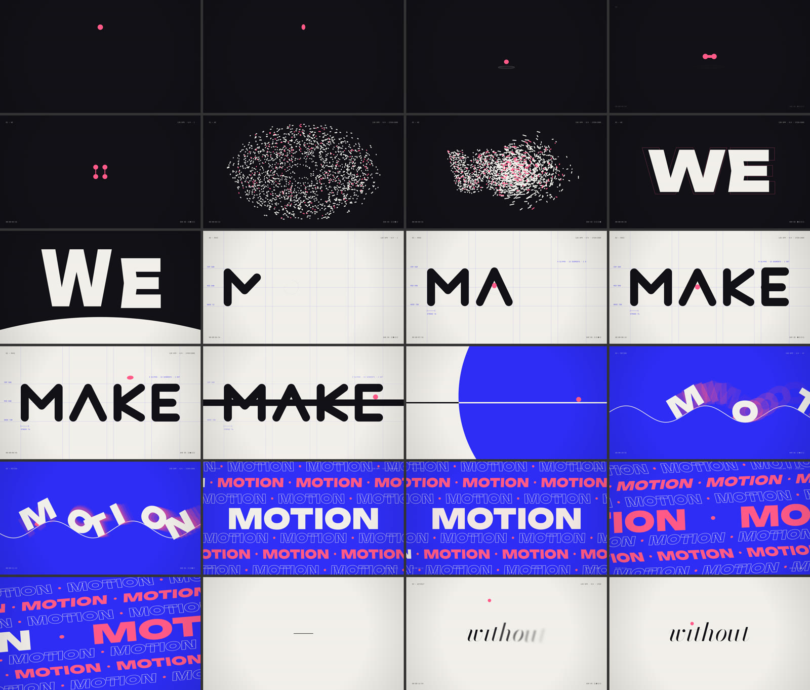
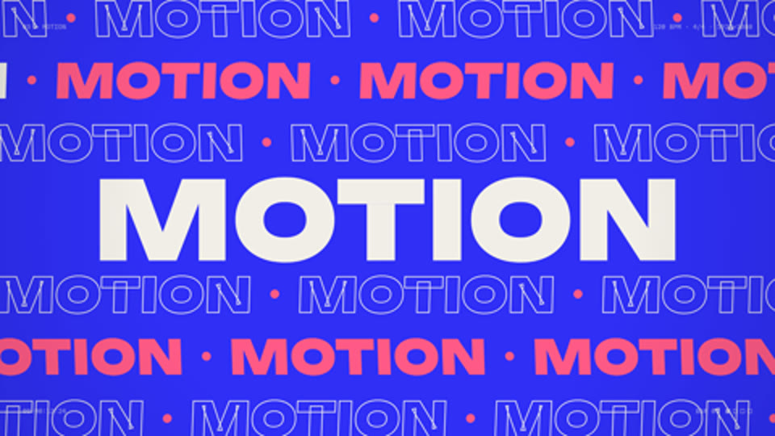
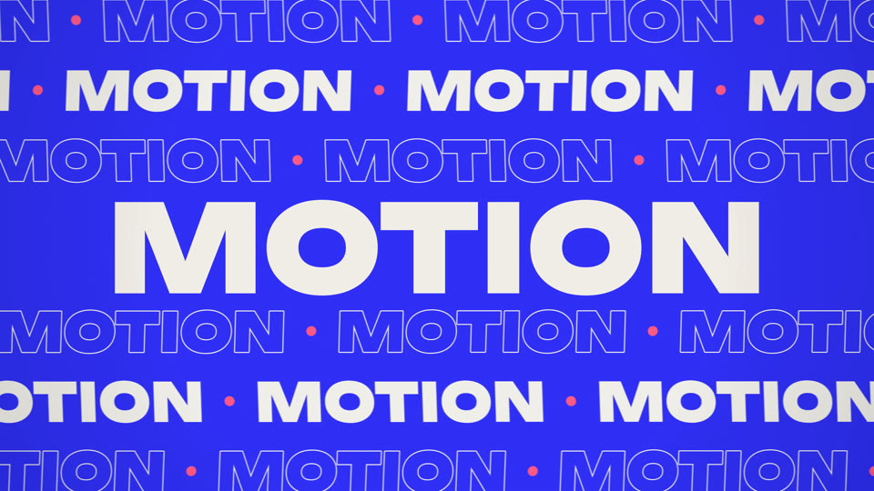
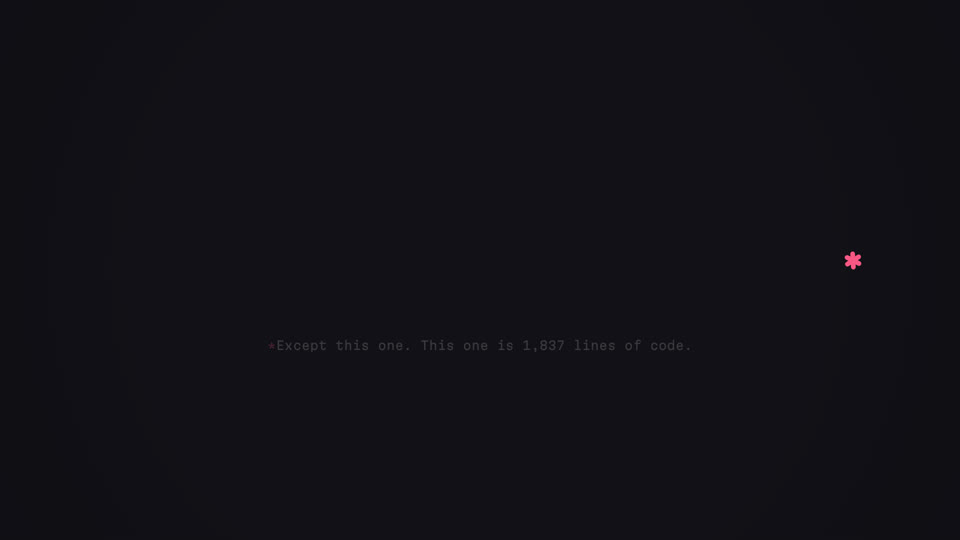
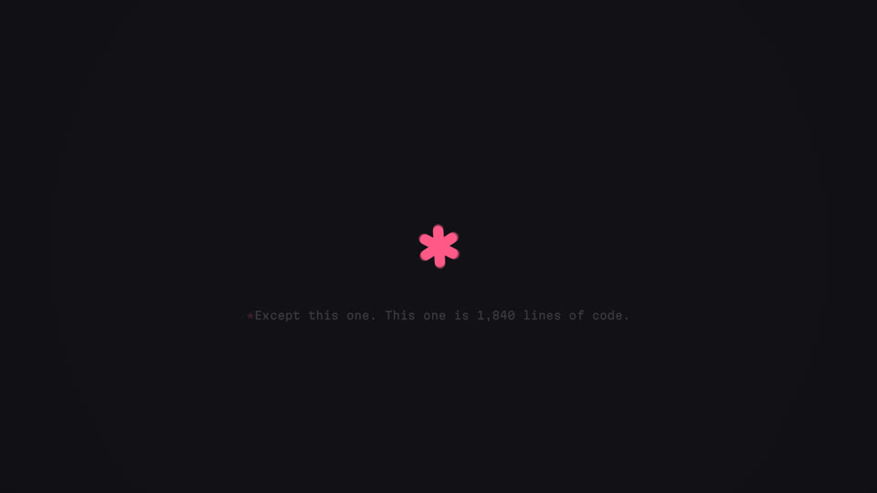
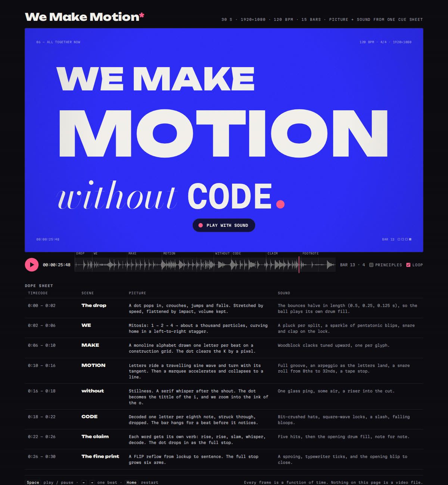
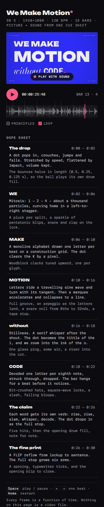
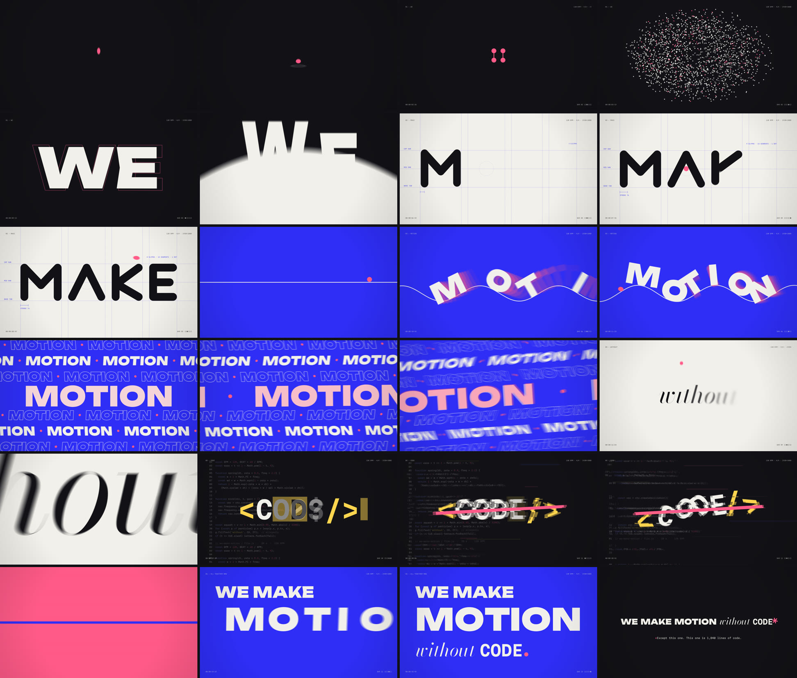

| Stage | What happened |
|---|---|
| 00 Brief | Read the brief, wrote the self-prompt and the rules on page 3, and planned all eight scenes on the beat grid on paper before writing any code: every hit, entrance and cut given a timestamp. |
| 01 Toolchain | Found headless Chromium and Playwright in the environment. Installed an ffmpeg build with x264 and AAC. Downloaded the three typefaces so offline renders lay out identically to the browser. |
| 02 Engine | Wrote the core: frame and tempo constants, the palette, easing library, analytic spring, keyframed ballistics, hash noise, the cue sheet, the camera-impact list, and glyph analysis (rasterise, distance transform, flood fill). |
| 03 Scenes | Built the eight scenes in three passes (drop, WE and MAKE; MOTION and without; CODE, the claim and the fine print), then the HUD, glitch pass, compositor and motion-blur accumulator. |
| 04 Score | Synthesised the kit (18 voice types) and wrote the score against the same cue sheet, then set up the mix bus: reverb, delay, bit-crusher, compressor and limiter. |
| 05 Player & renderer | Wrote the in-browser player (audio-clocked playback, scrubber, dope sheet, principles overlay), a build step that stitches the sources into one page, and the offline renderer. |
| Stage | What happened |
|---|---|
| 06 First look | Rendered 48 stills across the timeline as two contact sheets (next page). The whole film worked end to end on the first render. Review found two picture bugs and one choreography change. |
| 07 Full-size pass | Inspected frames at 1:1. Found the variable font’s overlapping contours showing in the outline rows, and the HUD colliding with the marquee. Fixed both. |
| 08 Sound check | Measured loudness (−17.0 LUFS, a bit shy) and added bus drive (−15.9 LUFS). Verified every cue against a spectrogram. |
| 09 Blur test | An 8-sample blur stepped visibly on the fastest move (MOTION entering at about 17,000 px/s). Rebuilt the accumulator in float at 24 samples. |
| 10 UI pass | Screenshotted the player at desktop and phone widths. Fixed a hidden-element rule, ambiguous timecodes, colliding scrubber labels and an oversized play button on phones. The player now idles instead of redrawing when paused. |
| 11 Master | Published the player. Rendered {{FRAMES}} frames with 24-sample blur and muxed the master. Re-shot the last 2.5 s so the footnote quotes the final line count. The first encode was 353 MB because film grain is incompressible noise. Lighter grain at CRF 18 brought it to about 16 MB with no visible loss. |
| 12 Mix fix | Charting loudness for this document showed the “silence” at 16 s peaking at −9.8 LUFS because of the glass ping. Lowered the pings 5–11 dB. A renderer bug wiped the frame cache during the audio-only pass, so the master was re-rendered in full. The frames are deterministic, so they came back identical. |
| 13 This document | Laid out in HTML in the film’s own typefaces, printed to PDF with the same headless browser, then proofed page by page. |

First-pass contact sheet, 0.3–17.4 s, one frame per tile, rendered before any fixes. The rows at 12.4 and 13.2 s show the pink-fill bug.
The first full render already worked end to end: every scene, transition and cue in place. The review notes were about craft and one real bug.


Leaking fill colour. The helper that draws each flamingo separator dot changed the fill colour and never changed it back, so every word after the first dot turned pink. Now each word sets its own fill. The before frame is a thumbnail from the first contact sheet.
Overlapping contours. Variable fonts build letters from overlapping shapes. Filled, that’s invisible; stroked, the overlaps show as stray lines inside M, N and T. The fix strokes at double width, then fills with the ground colour so only the outer half of each stroke survives.
Stepped motion blur. MOTION enters at roughly 17,000 px/s, about 140 px of travel inside one shutter. Eight samples left visible copies. Twenty-four samples, summed in 32-bit float so the average doesn’t band, give a continuous smear.


The bookend. The asterisk used to blink out where the sentence ended, off to the right. The film opens on a centred dot, so now the asterisk drifts home, shrinks back to the opening dot’s size, and blinks out with the same blip it started with.

The published player at 1440 px, paused on the poster frame.

At 390 px.
The browser version is not a video. It renders the film live on a canvas sized to the player and the screen’s pixel density (up to 2×, at most 1920 px wide), with the soundtrack synthesised on load. Picture is slaved to the audio clock, so it stays in sync.
Hidden elements forced hidden; dope-sheet timecodes changed from SS:FF to m:ss; short scrubber labels; a smaller play button on phones; the canvas idles when paused.
